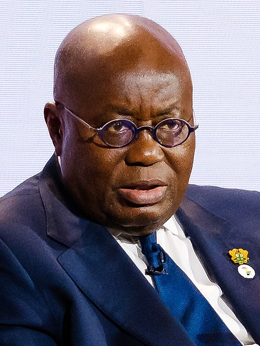

Economy

Accra (Capital)
Accra is the capital and largest city of Ghana, located on the southern coast at the Gulf of Guinea, which is part of the Atlantic Ocean.[2] As of 2021 census, the Accra Metropolitan District, 20.4 km2 (7.9 sq mi), had a population of 284,124 inhabitants, and the larger Greater Accra Region, 3,245 km2 (1,253 sq mi), had a population of 5,455,692 inhabitants. As Accra is close to the equator, the daylight hours are practically uniform during the year. Relative humidity is generally high, varying from 65% in the midafternoon to 95% at night. The predominant wind direction in Accra is from the WSW to NNE sectors. Wind speeds normally range between 8 and 16 km/h. High wind gusts occur with thunderstorms, which generally pass in squalls along the coast. click here for more
| Year | Population | Growth Rate |
|---|---|---|
| 2023 | 34,121,985 | 2.02% |
| 2022 | 33,475,870 | 2.07% |
| 2021 | 32,180,401 | 2.09% |
President
Nana Addo Dankwa Akufo-Addo was born 29 March 1944) is a Ghanaian politician who has served as the president of Ghana since 7 January 2017.[2][3] In 2020, he was re-elected for his second term, which will end on 6 January 2025.[4][5] Akufo-Addo previously served as Attorney General from 2001 to 2003 and as Minister for Foreign Affairs from 2003 to 2007 under the Kufuor-led administration.[6] He was elected as the Economic Community of West African States (ECOWAS) chairman on 7 September 2020.[7] He was re-elected for a second term as the Economic Community of West African States (ECOWAS) Chairman on 2 February 2021.[8] He ended his term on 3 July 2022.[9]Nana Addo Dankwa Akufo-Addo was born in Swalaba Accra, Ghana, on 29 March 1944, to a prominent Ghanaian royal and political family as the son of Adeline and Edward Akufo-Addo.[12][13] His father Edward Akufo-Addo from Akropong-Akuapem was Ghana's third Chief Justice from 1966 to 1970, chairman of the 1967–68 Constitutional Commission and the non-executive president of Ghana from 1970 till 1972.[13] Akufo-Addo's maternal grandfather was Nana Sir Ofori Atta, King of Akyem Abuakwa, who was a member of the executive council of the governor of the Gold Coast before Ghana's independence.[13] He is a nephew of Kofi Asante Ofori-Atta and William Ofori Atta. His granduncle was J. B. Danquah, another member of The Big Six.[14] He started his primary education at the Government Boys School, Adabraka, and later attended Rowe Road School, both in Accra Central. He went to England to study for his O-Level and A-Level examinations at Lancing College, Sussex, where he was nicknamed "Billy" and joined the Anglican faith.[1] He began the Philosophy, Politics and Economics course at New College, Oxford, in 1962, but left soon afterwards.[15] He returned to Ghana in 1962 to teach at the Accra Academy, before going to read economics at the University of Ghana, Legon, in 1964, earning a BSc (Econ) degree in 1967.[16] He subsequently joined Middle Temple and trained as a lawyer under the apprenticeship system known as the Inns of Court, where no formal law degree was required.[17] He was called to the English Bar (Middle Temple) in July 1971. He was called to the Ghanaian bar in July 1975.[18] Akufo-Addo worked with the Paris office of the U.S. law firm Coudert Brothers. In 1979, he co-founded the law firm Prempeh and Co. More info
Ghana’s stable, democratic government supports mining
Ghana’s political stability is underpinned by strong democratic credentials. The mining industry accounts for over 50% of foreign direct investment and is the largest tax-paying sector in the country.Gold contributes over 90% of Ghana’s total mineral exports3 and makes up 49% of the country's total export value.Ghana’s prolific Bibiani Shear zone, location of Newcore’s Enchi Gold Project, hosts several multi-million ounce gold deposits. Mines are operated by some of the world’s largest gold companies including Newmont and Kinross.Ghana has an advanced infrastructure platform compared with most African countries, including water, electricity and mobile networks as well as a good network of roads and highways. The country’s long history of mining has provided a skilled and well-educated mining workforce.
| Export goods | Main export partners | Import goods | Main import partners |
|---|---|---|---|
| oil, gold, cocoa, timber, tuna, bauxite, aluminum, manganese ore, diamonds, horticultural products | India 23.8% United Arab Emirates 13.4% China 10.8% Switzerland 10.1% Vietnam 5.2% Burkina Faso 4% | capital equipment, refined petroleum, foodstuffs | China 16.8% United States 8% United Kingdom 6.2% Belgium 5.9% India 4.1% |